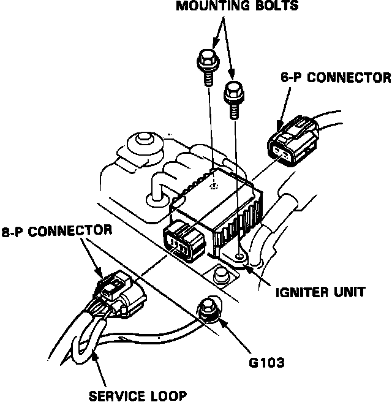

Ignition Control Module: Service and Repair
Igniter Unit:

1. Disconnect the 8-P and 6-P connectors from the igniter unit. The igniter unit is mounted on the engine, drivers side.
2. Remove the 2 mounting bolts from the igniter unit.
3. Pry or slide the igniter unit, pull out of the front side.
CAUTION: Be careful not to damage the vacuum hose when removing the igniter unit.
4. Install new igniter unit and reconnect connectors.